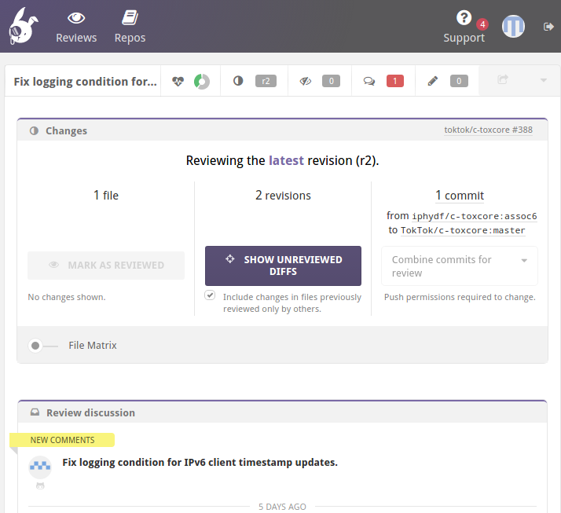
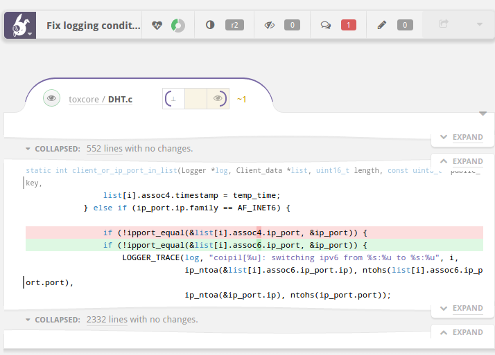
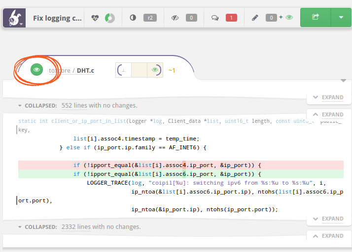
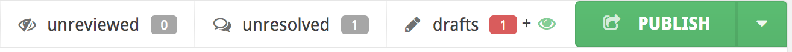
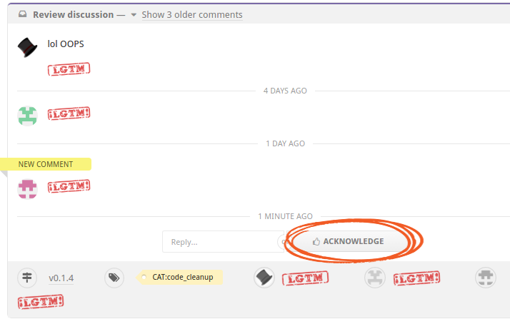
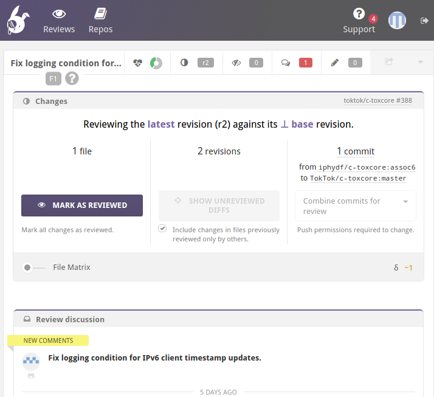

The TokTok review process requires at least three reviews for every pull request. One of the reviews must be from a developer. The two other reviews can be from a developer but can also be from the community. The idea is that the community, i.e. the Tox/TokTok users, can have direct influence on how the code and surrounding elements evolve. This page explains to a new GitHub user how to engage in a community review.
Step 1: Look over the PR list
Take a look at the pulls page on this website. It lists all the repositories that currently have open pull requests.
You can start by reading through the PR titles and see if anything catches your interest. You can also just randomly click on some PR numbers and enter the review. Everyone is allowed to review any number of PRs they like. You can post review comments and engage in discussions. You are welcome, and we will be happy to learn about any questions, concerns, or thougths you’d like to express.
Step 2: Log in to Reviewable
- Open the Reviewable link in the “#” column on the page or on GitHub in the PR description itself.
- It will ask you for some permissions. You can safely grant them. Reviewable will not write to your repositories, it only needs those to be able to edit comments and add the Reviewable link.
- You should now see a page like the one below.
- As you can see, there is a SHOW UNREVIEWED DIFFS button. When you click this button, you should be able to see the changes under review.

Step 3
- Scroll down to see the file changes. You will find something like the
screenshot below. Here, we see that someone changed a
4into a6in a file namedDHT.c. The PR description explains why this was done: “Fix logging condition for IPv6 client timestamp updates”. - Now comes your review: your task is now to check whether the change makes
sense. In this example, we see that
assoc4was checked in an IPv6 code block. Now that is fixed. Seems legit. :) - If you don’t understand what this change does, ask a question. We will be happy to explain what we’re doing. This helps not only you, but also anyone in the future who may be digging through the commit history. It also helps us keep a high standard of documenting changes and maintains transparency towards the community and potential new contributors. Last but not least, explaining a change can help the author find mistakes.
- To ask a question or express a concern with a change, click the line you want to comment on. This opens a text editor where you can write your comment in Markdown format.

Step 4
When you are done with a file, click the eye symbol in the corner. This marks the file as reviewed. Even if you have put comments on it, still mark it as reviewed, which just means that you saw it. It does not mean that you consider the file OK. Your comments need to be explicitly marked resolved by you clicking the ACKNOWLEDGE button.

Step 5
As a last step, after having all files reviewed, click the PUBLISH button on the top right of the UI, marked in the image below.
You can show the File Matrix to see whether you have reviewed all the files.
The red “1” next to the speech bubbles means that there are some comments that need your attention. Click on the speech bubbles button to see them. Clicking on it again will show you the next comment and eventually wraps back to the first one.

For each comment, you can either write a reply yourself, or simply press the ACKNOWLEDGE button to mark them as seen.

Alternative: mark all files as reviewed
Instead of marking each individual file as reviewed, you can also simply review all files and then click the MARK AS REVIEWED button at the top to mark all files as reviewed at once.

That’s all, folks
Now you’ve done a community review! Well done :) and thank you very much for helping us maintain our transparency and quality standards. If you have any questions, don’t hesitate to ask.